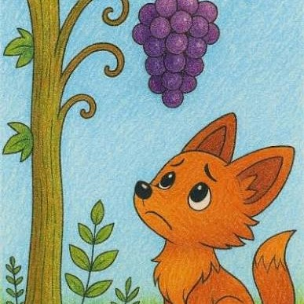

It is easy to dislike what we cannot have.

One warm afternoon, a hungry fox was wandering through a vineyard. As he looked around, he saw a large bunch of juicy purple grapes hanging from a vine. The grapes looked fresh, sweet, and delicious. The fox's mouth watered. "I must have those grapes," he said. He stepped back and jumped as high as he could. But the grapes were just out of reach. He tried again and again. Each jump was higher than the last, but he still could not reach them. The fox became tired and out of breath. After many unsuccessful attempts, he stopped jumping. He looked at the grapes one last time and turned away. As he walked off, he said, "Those grapes are probably sour anyway. I don't want them." The fox left the vineyard, pretending he never wanted the grapes. In reality, he was only trying to make himself feel better because he had failed.
It is easy to despise what you cannot get.